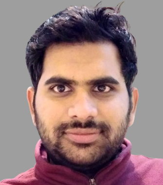

Postdoctoral Researcher | Machine Learning | Information Systems & Machine Learning Lab | University of Hildesheim, Germany
I am a Postdoctoral Researcher in the Information Systems and Machine Learning Lab (ISML) at the University of Hildesheim. My current research is dedicated to Uncertainty Quantification and the development of robust models for time series analysis. I earned my Ph.D. in Data Analytics in 2024 under the supervision of Prof. Lars Schmidt-Thieme, focusing on the challenges of learning from irregular time series with missing values. Building on this foundation, my interests have expanded into generative modeling for non-fixed-size data structures, including graphs, sets, and irregular sequences. My goal is to bridge the gap between complex, real-world data irregularities and reliable machine learning architectures.
University of Hildesheim
2018-2024
Dissertation: "Learning from Irregular Time Series with Missing Values: Beyond ODEs and missing value indicators"
Advisor: Prof. Dr. Dr. Lars Schmidt-Thieme
Summa cum Laude
Nanyang Technological University, Singapore
2015-2017
Jawaharlal Nehru Technological University, Anantapur India
2008-2012
First Class with Distinction